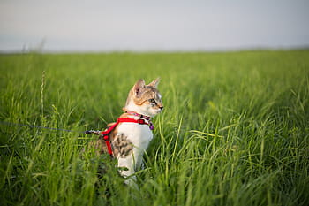

Cats
Fostering Cats
Fostering a cat means that you work with a shelter or rescue organization as a volunteer and you open your heart and home to a cat in need. As a foster parent, you bring a cat into your home for a limited amount of time and play a major role in helping that cat to be ready for adoption. An environment that feels like home instead of a shelter, is usually best for cats. Cats, like people, need a place to feel safe; a place where they can let their guard down and relax, where they don’t have to worry about where the next meal will come from, what other animal might challenge them in the night, or if they will be warm and dry. Many cats have been neglected or abused and don’t know what a loving home feels like. Foster families help them learn what it’s like to eat, sleep and play in a safe space. Learn more